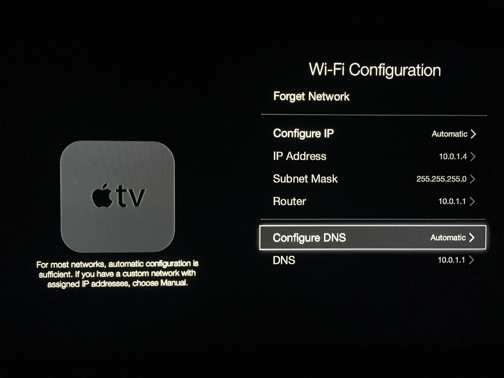

Step 1: Change Apple TV DNS
In this step we change the "DNS" server for your Apple TV to point to PopcornTV. This redirects all traffic from the "Trailers" application to the PopcornTV App.
- Go into the "Settings" Application on your Apple TV
- Select "General"
- Select "Network"
- Select your current network connection from the list
- Keep selecting until you recieve a screen similar to the one below this 
- Select "Configure DNS" then set it to "Manual"
- Select "DNS" and set it to
then press "Done" - Exit back to the "General" page
Once you have finished changing the DNS please select the "Next" Button